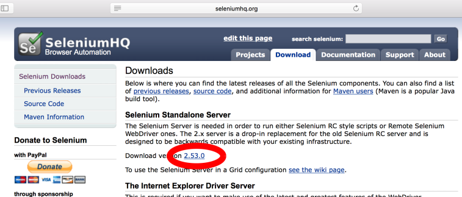
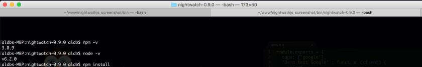

Nightwatchjs build
June 1, 2016 en mac nightwatchjs
What|Why is Nightwatch.js?
Nightwatch.js is an easy to use Node.js based End-to-End (E2E) testing solution for browser based apps and websites. It uses the powerful Selenium WebDriver API to perform commands and assertions on DOM elements. (c) nightwatchjs.org
I used Nightwatch.js for E2E testing script modules. I really liked option quick setup environment based on Node.js + write javascript test cases + use bash scripts(Node.js/javascript) for automatization run process. In this post I make detail description how setup Nightwatch.js on OS X platform.
Overview
Nightwatch.js Goals:
- Crossbrowsers
- Easy setup writing test process(Javascript, CSS, XPath)
- Good documentation
Let’s overview logic shceme how Nightwatch works with Selenium server and Browsers:

*Tests and bin directories in example build setup.
Setup
Here details setup description step by step for Mac OS X. TODO work build:
Install/Download
1.Install/update for latest version Java

After successful installed you can verify Java version online by java applet. Also check Java SDK.
2. Install/update for latest version Node.js. Check my previos post for Node.js setup.
3. Download latest Selenium Standalone Server

3.Download chromedriver for your OS.

4.Download Nightwatch.js from oficial website.
Build Files structure
5.Make new project folder, for example “nightwathjs_screenshot”. Create new folders: bin, tests. Copy/paste files: Selenium standalone Server, chrome driver, nightwatch-xxx.zip in bin directory. Extract(unzip) nightwatch-xxx.zip(on example:nightwatch-0.9.0.zip)

In bin directory keep all “run” files: drivers, original nightwatch.js arhive, selenium server and etc.
Screenshots directory for screenshots images.
In tests - tests cases files.
Npm install
6.Open in terminal folder “/nightwathjs_screenshot/bin/nightwatch-0.9.0” and run command:
$ npm install
Selenium server
7.For start test cases need run Selenium server with chrome webdriver. Open “/nightwathjs_screenshot/bin/” folder in terminal and run command:
$ java -jar selenium-server-standalone-2.53.0.jar -Dwebdriver.chrome.driver='chromedriver'@selenium server run example pic.twitter.com/kT5aKXs6Yi
— Alex (@aldbpr) June 11, 2016
In terminal windows start seleneium server(“Selenium Server is up and running”), for stop this process can use “control + c”. For next steps you need open new “tab” in terminal - “control + r”.

For check Selenium server status use API url - http://localhost:4444/selenium-server/driver/?cmd=getLogMessages
Also can stop Selenium server - http://localhost:4444/selenium-server/driver/?cmd=shutDownSeleniumServer
Configuration
8.Depending upon startup point Nightwatch.js used configuration file. By default used configuration from Nightwatch.js - “nightwathjs_screenshot/bin/nightwatch-0.9.0/bin/nightwatch.json”. Let’s make new file nightwatch.json in main folder “nightwathjs_screenshot”:
{
"src_folders" : ["tests"],
"output_folder" : "reports",
"custom_commands_path" : "",
"custom_assertions_path" : "",
"page_objects_path" : "",
"globals_path" : "",
"selenium" : {
"start_process" : false,
"server_path" : "",
"log_path" : "",
"host" : "127.0.0.1",
"port" : 4444,
"cli_args" : {
"webdriver.chrome.driver" : "./bin/chromedriver"
}
},
"test_settings" : {
"default" : {
"launch_url" : "http://localhost",
"selenium_port" : 4444,
"selenium_host" : "localhost",
"silent": true,
"screenshots" : {
"enabled" : false,
"path" : ""
},
"desiredCapabilities": {
"browserName": "chrome",
"javascriptEnabled": true,
"acceptSslCerts": true
}
},
"firefox" : {
"desiredCapabilities": {
"browserName": "firefox",
"javascriptEnabled": true,
"acceptSslCerts": true
}
},
"chrome" : {
"desiredCapabilities": {
"browserName": "chrome",
"javascriptEnabled": true,
"acceptSslCerts": true
}
},
"safari" : {
"desiredCapabilities": {
"browserName": "safari",
"javascriptEnabled": true,
"acceptSslCerts": true
}
}
}
}Detail configuration documentation.
Write and run tests
9.Let’s write first test file for Nightwatch.js. It navigates to google.com and searches for nightwatch, * verifying if the term ‘The Night Watch’ exists in the search results. In “nightwathjs_screenshot/tests” folder make new file google.js:
/**
* Sample automated test scenario for Nightwatch.js
*
* > it navigates to google.com and searches for nightwatch,
* verifying if the term 'The Night Watch' exists in the search results
*/
module.exports = {
'demo test google' : function (client) {
client
.url('http://google.com')
.waitForElementPresent('body', 1000);
},
'part two' : function(client) {
client
.setValue('input[type=text]', ['nightwatch', client.Keys.ENTER])
.pause(1000)
.assert.containsText('#main', 'Night Watch')
.end();
}
};For run this test file open terminal in “nightwatchjs_screenshot” folder and use command:
$ ./bin/nightwatch-0.9.0/bin/nightwatch --test tests/google.jsWhere:
- ./bin/nightwatch-0.8.18/bin/nightwatch - path for nightwatch executable file
–test - additional params, run specific test file. If in project used another version of nightwatch need update this command from “nightwatch-0.9.0” for “nightwatch-x.x.x” or folder name what used in project. - tests/google.js - path for file
@nightwatchjs test run example pic.twitter.com/EZBGLtb3xM
— Alex (@aldbpr) June 11, 2016
Done!
Now you can write and run your test. On the end of the post can find Links for most helpfull nightwatchs resources.
Final file’s structures:

In additional you can check two my two favorite test examples:
/**
* Sample automated test scenario for Nightwatch.js
*
* > it navigates to nightwatchjs.org/api and click on API list.
* > verify Text h2 header equal clicked li element Text
*/
module.exports = {
'Test NightwatchJS.org' : function (client) {
client
.url('http://nightwatchjs.org/api')
.waitForElementVisible('body', 1000)
.elements('css selector', '#api-container ul.nav.bs-sidenav>li', function (result) {
for (var i = 0; i < result.value.length; i++) {
var id = '';
client
.elementIdClick(result.value[i].ELEMENT)
.pause(500)
.url(function(r){
id = '#' + r.value.split('#')[1]
})
.elementIdText(result.value[i].ELEMENT, function (res) {
client.expect.element(id).text.to.equal(res.value.split('\n')[0]);
});
}
})
.end();
}
};For this test case need folder “nightwathjs_screenshot/screenshots”, for save screenshot images.
/**
* Sample automated test scenario for Nightwatch.js
*
* > it navigates to google.com and make screenshot
*/
module.exports = {
'Make screenshot': function (client) {
var file = './imgs/' + Date.now() + '.png';
client
.resizeWindow(1300, 1300)
.url('http://google.com')
.waitForElementPresent('body', 1000)
.pause(1000)
.saveScreenshot(file)
.perform(function(client, done) {
console.log('Screenshot save:' + file);
// potentially other async stuff going on
// on finished, call the done callback
done();
})
.end();
}
};Links:
- Nightwatch.js - http://nightwatchjs.org
- Gitub wiki nightwatch.js - https://github.com/nightwatchjs/nightwatch/wiki
- Google group - https://groups.google.com/forum/#!forum/nightwatchjs
- Drivers for Selenium - https://selenium-release.storage.googleapis.com/index.html
- Selenium server - http://www.seleniumhq.org